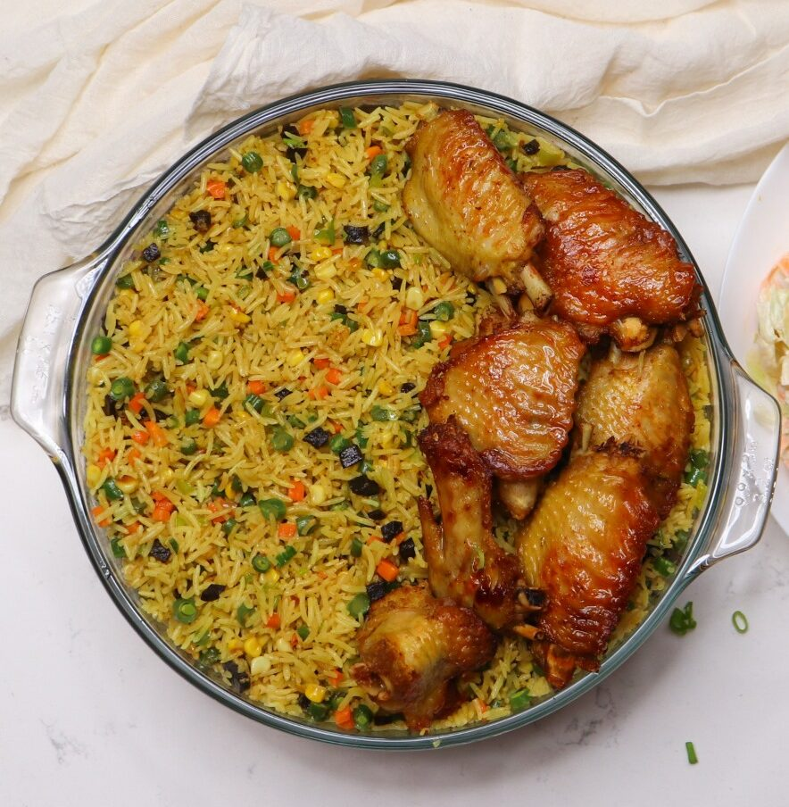

FriedRice Recipe

Description:
This is a Nigerian fried rice with turkey meat, usually served during special events in some homes.
Ingredients for this masterpiece below:
- The Rice (Basmati Preferrably)
- Onions,veggies (Carrot, bells pepper, green-peas, any veggies of your choice. etc.)
- Your desired protein e.g (chicken, turkey. etc..)
- Seasonings Curry, maggi, pepper, thyme, etc
- Liver
Steps:
First you might want to start with your protein, either boiling or grilling it
For this tutorial i'll be boiling it because of the stock
- Wash your rice thoroughly about 3-4 times and set aside
- Boil your protein having marinated it for some hours with your seasonings
- Remove the boiled protein from the water and set aside
- Fry the protein with Oil or grill the protein till it's like golden brown like in the above image
- Heat some oil in a pot, i like to toast my rice first with onions
- Pour some onions in the pan after heating up the oil
- Fry the onions for a while and add the washed rice
- Toast for 3 mins and whilst toastinng add curry till it's green
- Proceed to add your desired seasonings
- Add in the meat stock from earlier and add some water to make it slightly above the rice cos we want to maintain a good texture
- Now add an aluminium foil paper on the top to cover and cook it under low to medium heat
- Now the veggies, cut your veggies into your desired shape and size
- Get a fry pan add little oil, when heated up, throw in your veggies and stir fry together with the Liver
- After 2 mins in add your seasonings and make sure the curry is slightly more
- Stir fry for about 3 mins again and add the already cooked rice in and stir
Make sure the rice is already soft before adding into the veggies. That should be all.
This is for education purpose only from an asignment on The Odins Project
Happy cooking!
Home